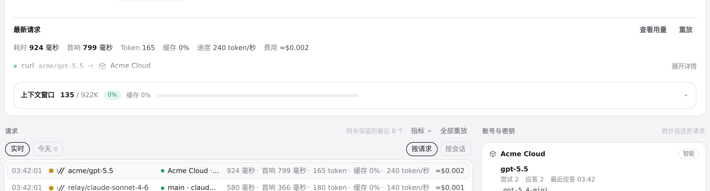
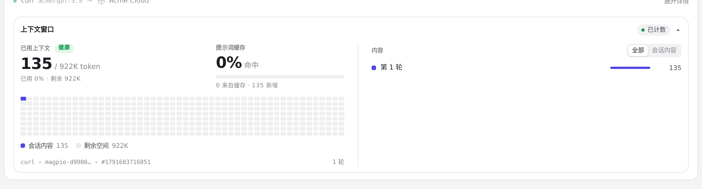
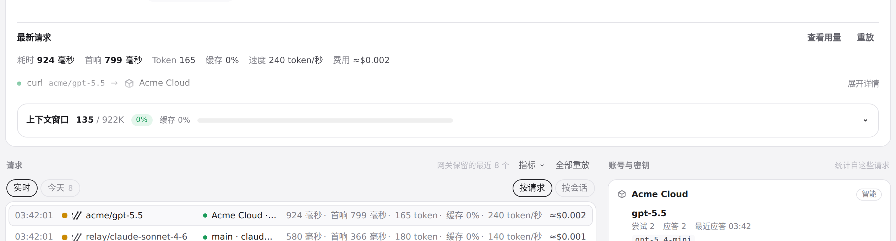

#1354 界面预览
commit b60224b · 回到 PR · 路由页的实时卡片改为可折叠：请求路径整行成为「展开详情/收起详情」控件，展开后才显示决策原因、用途说明与「当前路由策略说明」；上下文窗口只留一个可点击标题（已用/窗口、占比、缓存与占用条），展开才构建网格与内容列表，两处折叠状态各自记住。性能指标上移到请求路径之前，常规成功文案与重复的账号/模型名被去掉。
红线是鼠标走过的轨迹，红色圆环是一次点击；底部文字是这一步在做什么。空格暂停，← → 逐段查看。
请求详情的展开与收起 · 路由卡片收起时：指标在上，请求路径渐隐成一行，右侧写着「展开详情」
请求详情的展开与收起 · 展开后出现的决策原因、用途说明与「当前路由策略说明」
请求详情的展开与收起 · 收起后回到一行渐隐的请求路径，性能指标仍然可见

上下文窗口的展开与收起 · 上下文收起时：只有一行标题，带已用/窗口、占比、缓存与占用条

上下文窗口的展开与收起 · 展开后构建出的提示词网格与内容列表，标题里不再重复计数

上下文窗口的展开与收起 · 收起后只剩标题一行与占用条，网格与列表已移除